وِردي · الصفحة الرئيسية · الجولات الثانية إلى الرابعة · ٢٧ نوفمبر ٢٠٢٦
طريق ب، بلا عنوان وسطر تحته
الجملة واحدة في كل المقترحات: «لا ذكرَ هنا إلا ما صحّ عن النبي ﷺ». الذي يتغير هو أين تذهب القاعدة (البخاري ومسلم والألباني) وكيف تظهر. كل مقترح مبني في الموقع الحقيقي ومصوّر على الهاتف وسطح المكتب.
الجولة الرابعة · نص ب١
الشكل ثابت: جملة واحدة، الدعوى بالحبر الكامل وتكملتها بحبر باهت. الذي يتغير هو الكلام. قواعد النص:
- النصف الباهت يضيف معلومة جديدة، لا يعيد الأول بكلمات أهدأ.
- سطران أو ثلاثة على الهاتف، لا أربعة.
- كلمات القارئ: «رواه» و«مصدره» بدل «تخريجه» و«حكمه».
- شيء حقيقي (اسم، رقم، قاعدة) بدل صفة («موثوق»، «شامل»).
- كل كلمة صادقة كما في
docs/content.md.
لا ذكرَ هنا إلا ما صحّ عن النبي ﷺ، ومع كل ذكر رابطٌ إلى من رواه.
«من رواه» بدل «تخريجه»: الكلمة التي يفهمها كل قارئ.
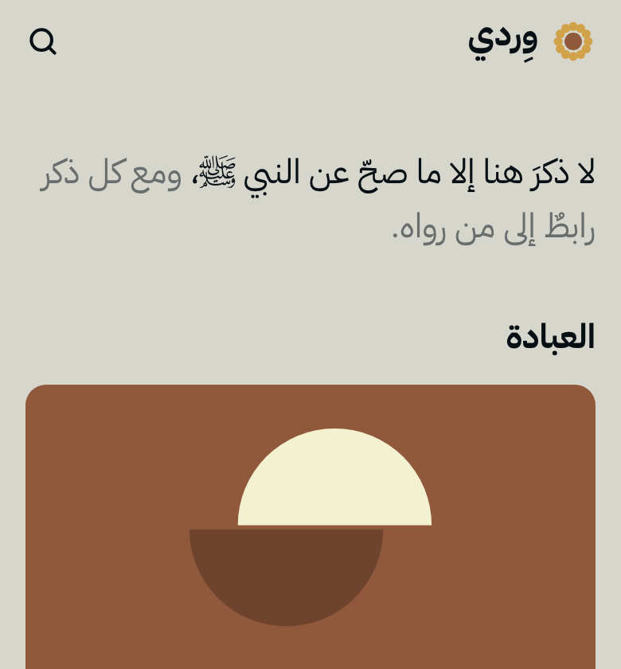
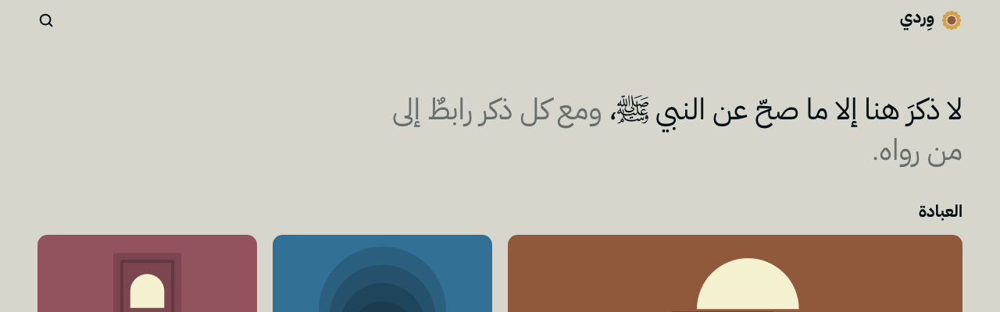
لا ذكرَ هنا إلا ما صحّ عن النبي ﷺ. ما ضعّفه الألباني تُرك، ولو قبله غيره.
النصف الباهت يقول القاعدة الصارمة التي لا يقولها غيرنا. سطران على الهاتف.
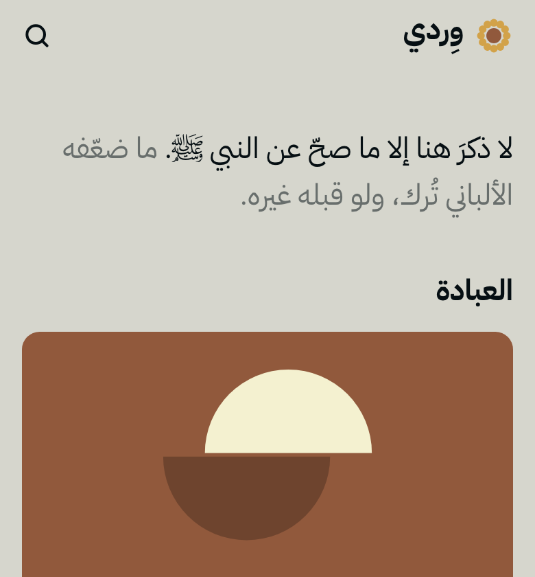
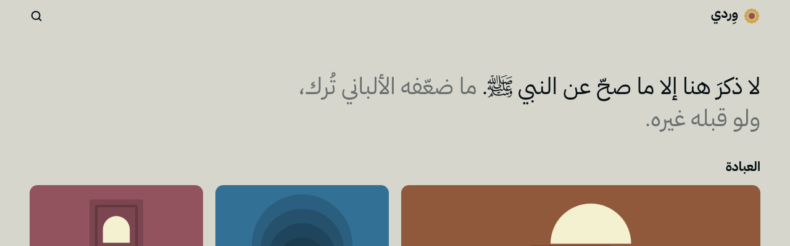
لا ذكرَ هنا إلا ما صحّ عن النبي ﷺ، في البخاري ومسلم أو بتصحيح الألباني، ومصدر كل ذكر معه.
القاعدة كاملة بأقصر عبارة، لكنها ثلاثة أسطر.
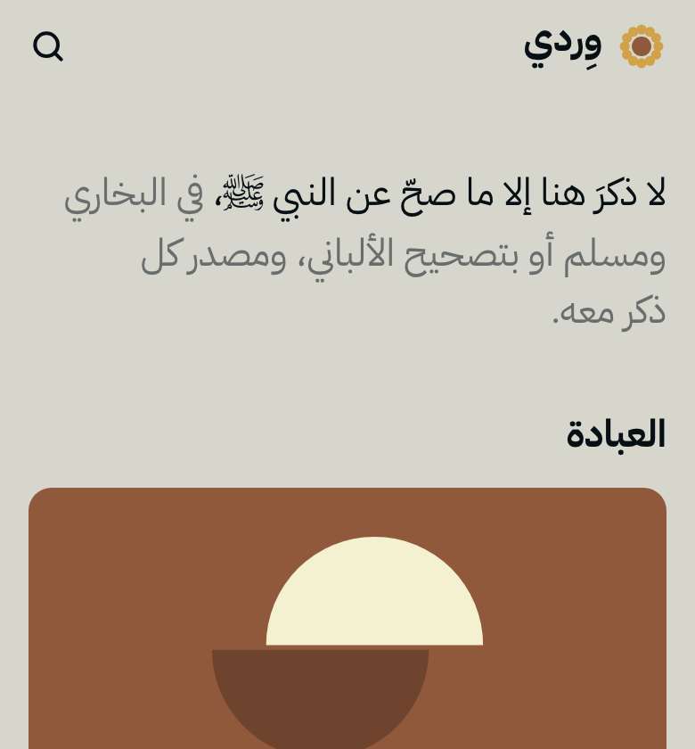
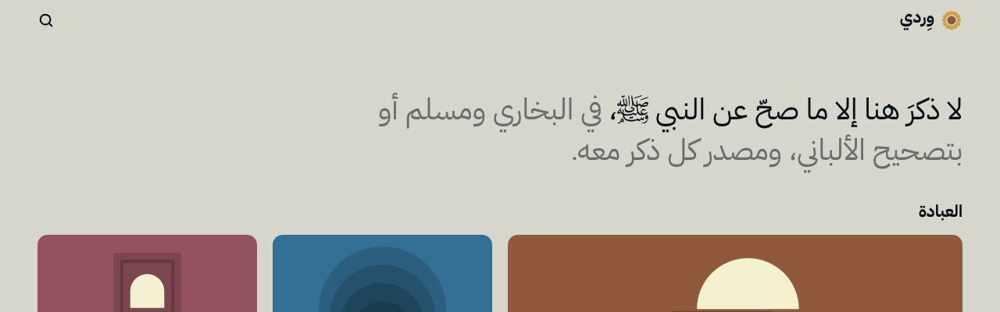
لا ذكرَ هنا إلا ما صحّ عن النبي ﷺ، وكل ذكر يدلّك على مصدره لتتحقق بنفسك.
الفائدة للقارئ لا للموقع: لا تأخذ كلامنا، تحقّق.
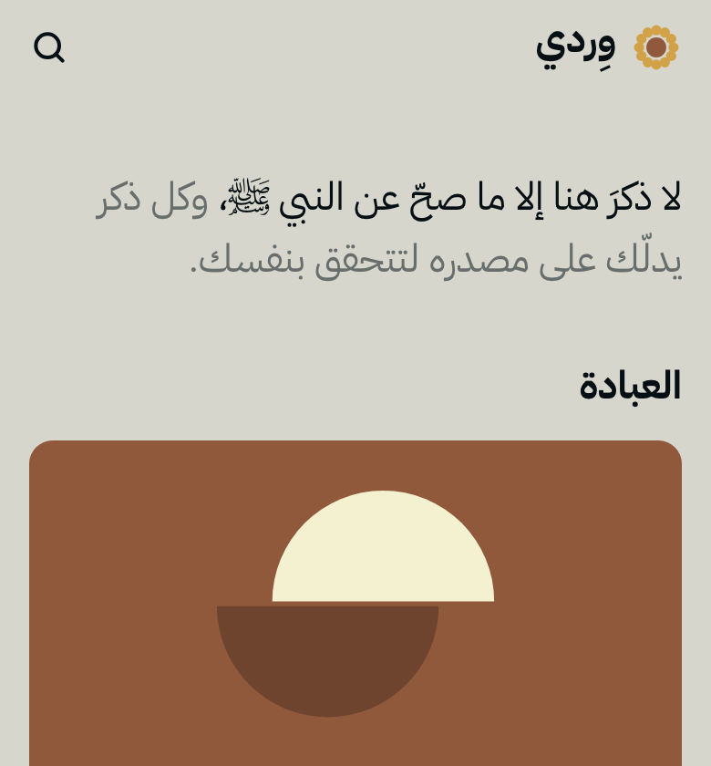
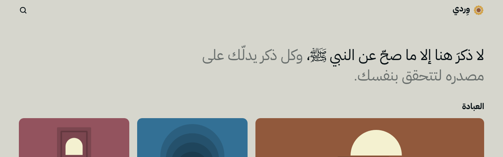
لا ذكرَ هنا إلا ما صحّ عن النبي ﷺ. والمصدر مع كل ذكر.
أقصرها. النصف الباهت أربع كلمات.
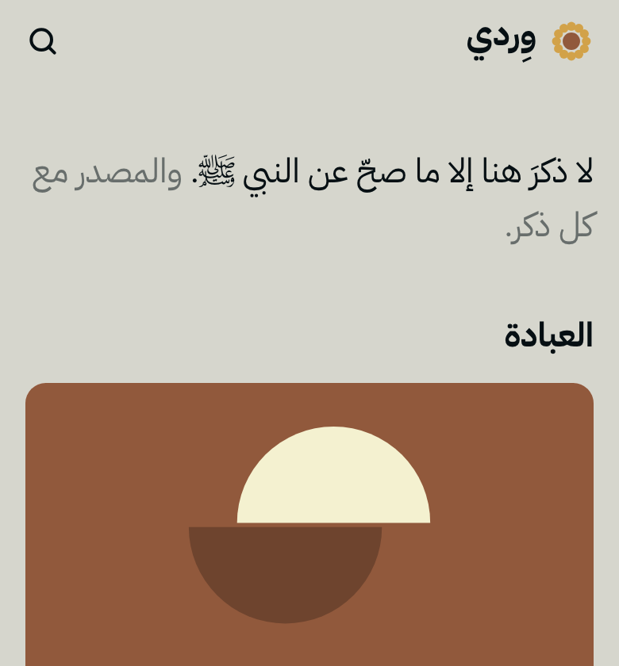
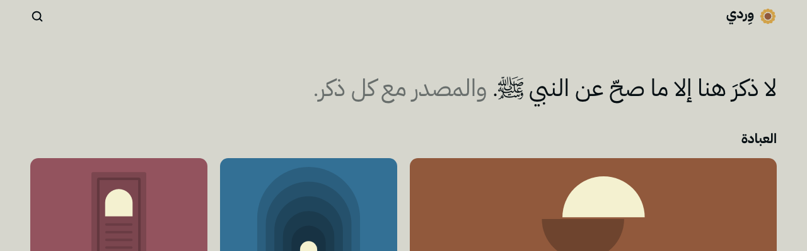
٢٤٨ ذكرًا صحّت عن النبي ﷺ، ومع كل واحد منها رابطٌ إلى مصدره.
رقم حقيقي بدل الحصر. يُحسب عند البناء.
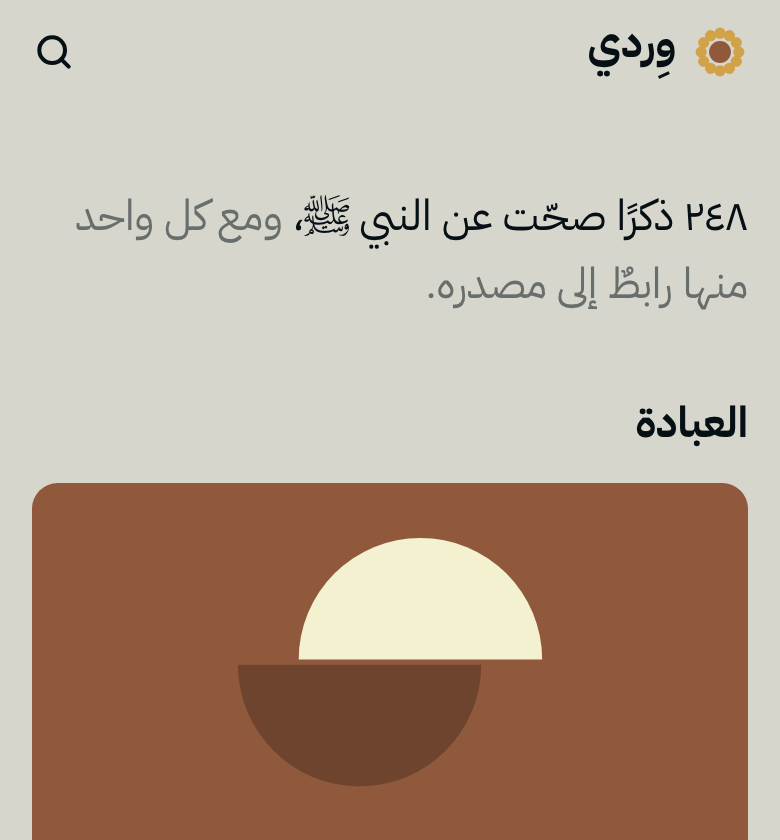
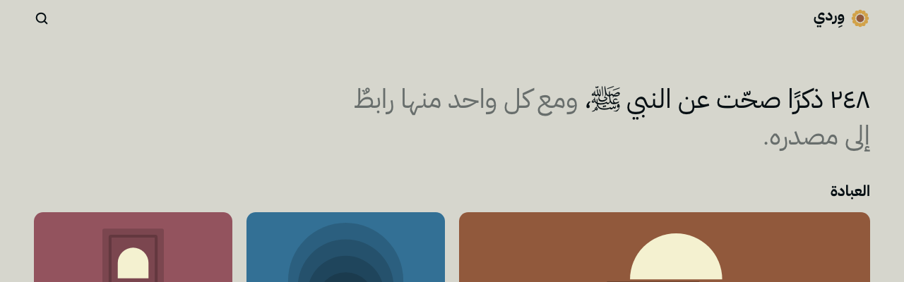
أذكار يومك كما صحّت عن النبي ﷺ، ولا شيء غيرها. ما ضعّفه الألباني تُرك.
يبدأ بالقارئ («يومك») ويختم بالقاعدة.
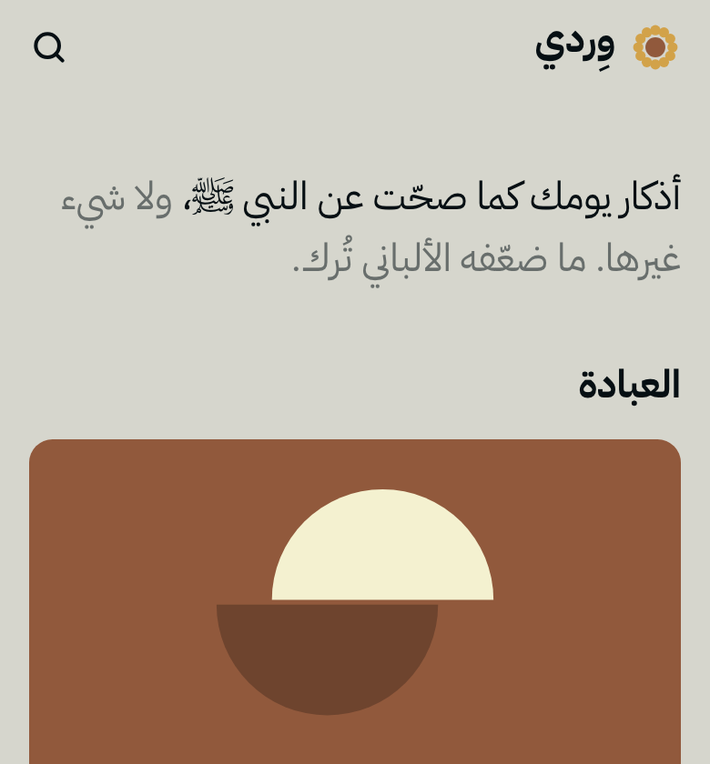
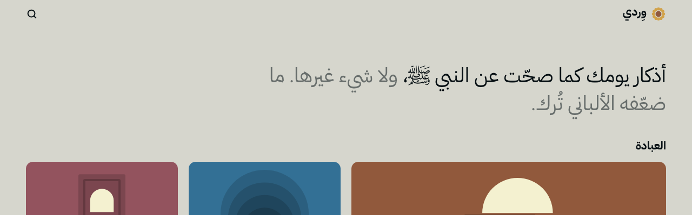
ما صحّ عن النبي ﷺ من الأذكار، وحده. في الصباح والمساء والنوم والصلاة، وفي السفر والمرض والهم.
النصف الباهت يسمّي ما في الموقع، والدعوى في كلمة «وحده».
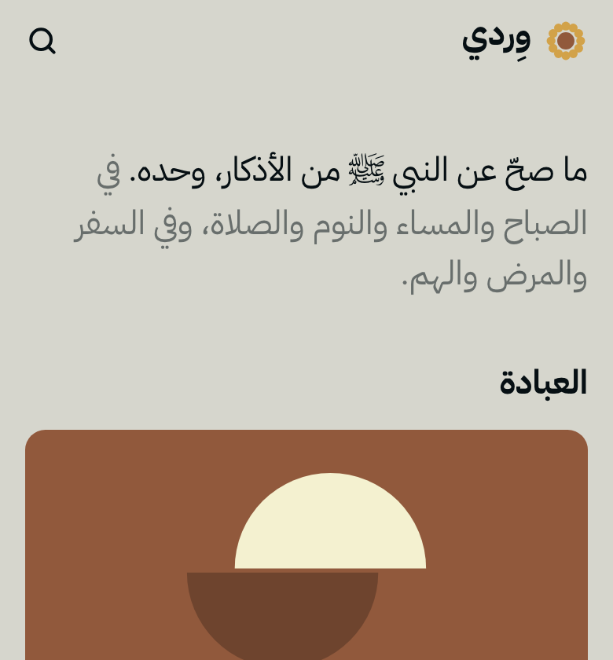
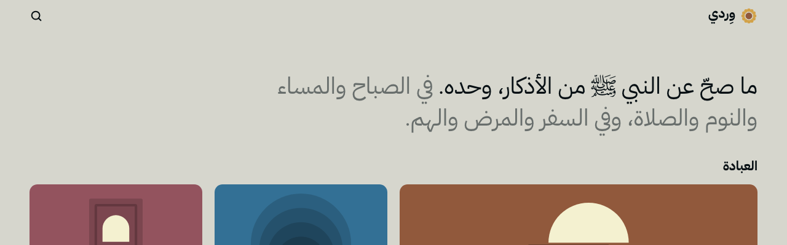
ما الذي يجعل الواجهة تبدو مصنوعة بالذكاء الاصطناعي
النماذج تميل إلى متوسط ما رأته، فتخرج كل صفحة بالقالب نفسه. هذه علاماته، وأين وقعت فيها الجولة الثانية بصراحة:
| العلامة | البديل الحديث | وقعت فيها |
|---|---|---|
| عنوان، ثم سطر يعيده بكلمات أهدأ | جملة واحدة تكفي، أو شيء حقيقي مكان السطر الثاني | الجولة الأولى كلها |
| كلمة صغيرة فوق العنوان بنقاط فاصلة | لا شيء فوق العنوان إلا ما له وظيفة | ب٥ |
| ثلاثة أعمدة مرقّمة أو بأيقونات تشرح «المزايا» | اعرض الشيء نفسه بدل قائمة صفاته | ب٢ |
| زر بشكل حبة في رأس الصفحة | رابط أو حقل يؤدي عملًا حقيقيًا | ب٤ |
| صورة زخرفية لا تحمل معلومة | كل ما في الرأس يُقرأ أو يُستعمل | ب٥ |
| نص رمادي باهت يحمل نصف الرسالة | التسلسل بالحجم والوزن، لا بتخفيف الحبر | ب١ |
| أوصاف (موثوق، صحيح، شامل) بدل أشياء حقيقية | رقم حقيقي، مصدر حقيقي، ذكر حقيقي | كلها إلا ما ذكر المصادر |
المصادر: Why do AI-generated websites all look the same · Creative Bloq · Everything looks the same · Refactoring UI (Wathan وSchoger): التسلسل بالحجم والوزن، وإبراز الشيء بتخفيف ما حوله.
الجولة الثالثة · الشيء نفسه بدل وصفه
خمسة مقترحات بلا شيء من العلامات أعلاه. كلها بالجملة نفسها، ولا عنصر جديد في التصميم إلا ما يُذكر.
الذكر نفسه دليلًا
تحت الجملة ذكرٌ حقيقي من الموقع، ببطاقته كما هي في صفحة الصباح والمساء، مفتوحةً على تخريجه: «سُبْحَانَ اللَّهِ وَبِحَمْدِهِ»، مئة مرة، صحيح مسلم (٢٦٩٢)، برابطه إلى الدرر السنية. الدعوى ثم دليلها، بلا كلمة شرح. على سطح المكتب يقفان جنبًا إلى جنب.
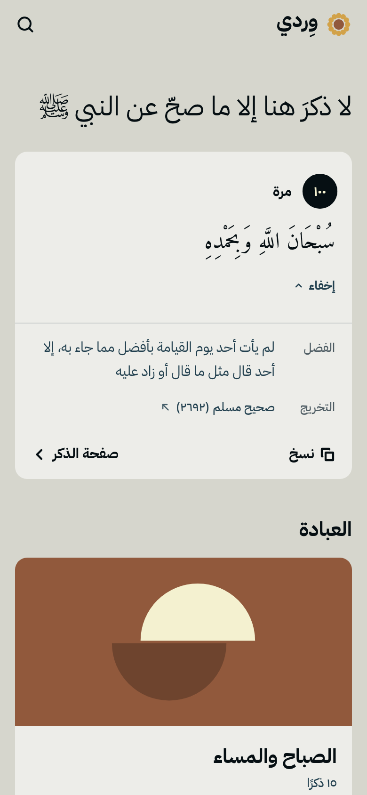
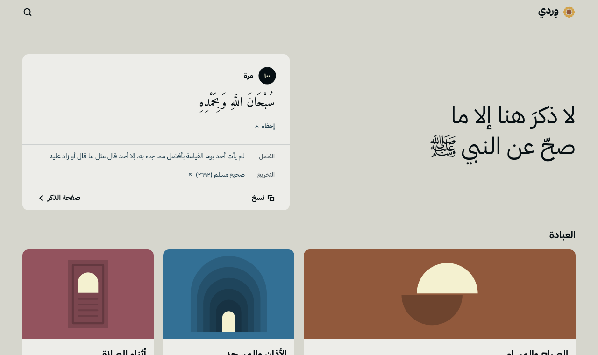
- يُري ولا يصف: الزائر يرى ما يجده في كل صفحة قبل أن يدخلها.
- التخريج ظاهر في مكانه الحقيقي، فتُفهم كلمة «صحّ» بلا شرح.
- لا عنصر جديد: البطاقة نفسها، تعمل (نسخ، صفحة الذكر).
- يمكن أن يتغير الذكر كل يوم من بين ما في الموقع، والبناء ثابت.
- البطاقة طويلة على الهاتف، فتنزل الأقسام نحو شاشة.
- اختيار ذكر واحد للواجهة قرار يحتاج رأيك.
الرقم الحقيقي
«٢٤٨ ذكرًا، ليس فيها إلا ما صحّ عن النبي ﷺ». رقم من الموقع نفسه (مجموع أعداد البطاقات) بدل الصفة. الرقم وحده بالوزن الثقيل.
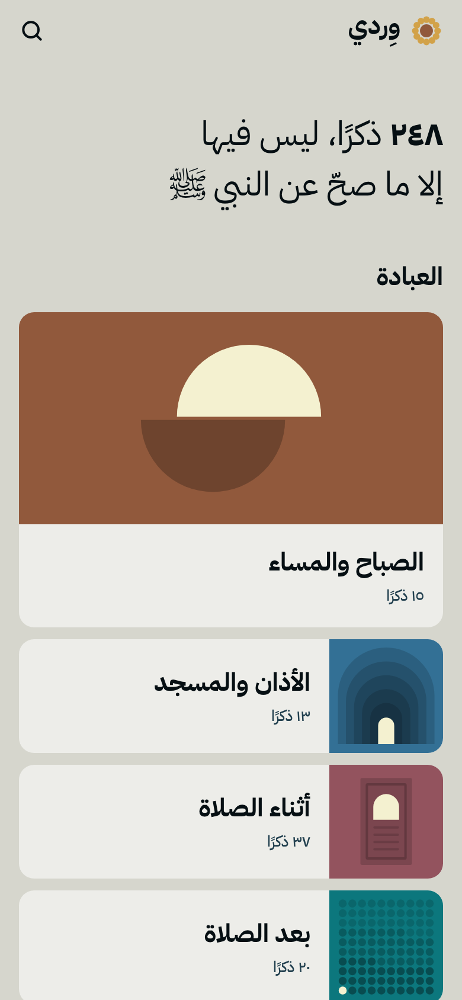
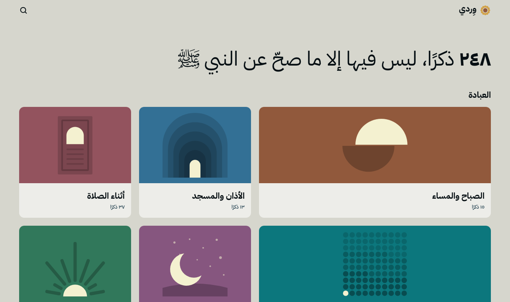
- الرقم يقول الحجم والدقة معًا: عدد معدود، لا «مجموعة شاملة».
- سطر واحد، ويمكن أن يُحسب عند البناء فلا يخطئ.
- الرقم يتغير مع كل إضافة، فلا بد أن يُحسب لا أن يُكتب.
- وحده لا يُري التخريج.
البحث أولًا
تحت الجملة حقل بحث كامل العرض يفتح بحث الموقع الموجود، ونصّه يقول ما فيه: «ابحث في ٢٤٨ ذكرًا: النوم، السفر، الهم…». أول ما في الصفحة شيء يُستعمل.
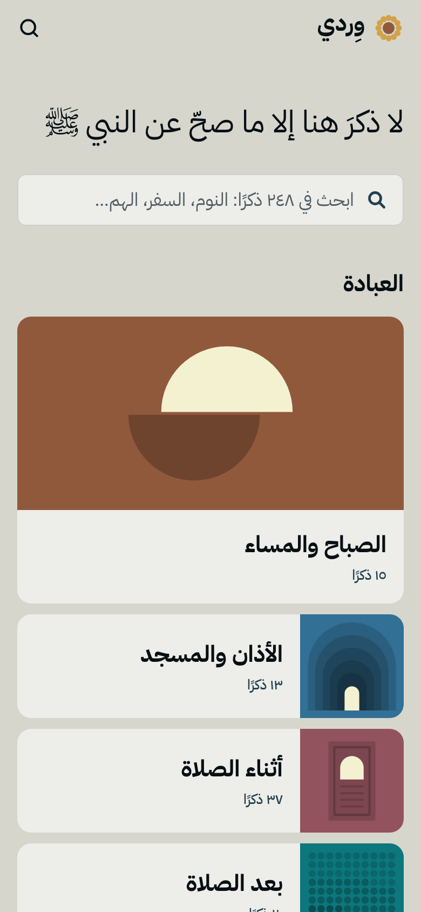
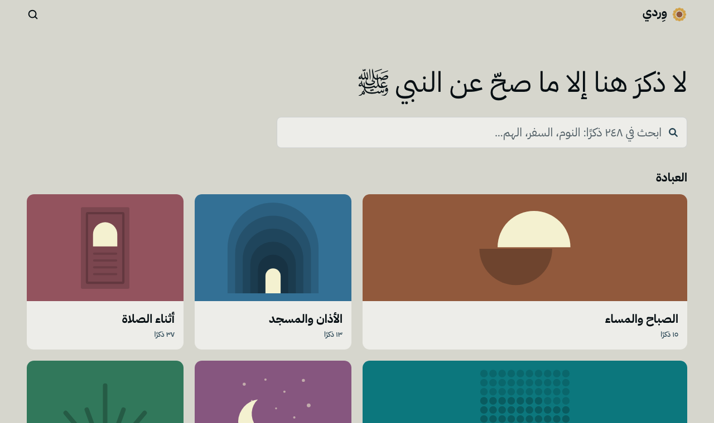
- من جاء يبحث عن ذكر بعينه يصل بنقرة، أكبر هدف في الصفحة (قانون فيتس).
- يعمل بلا كود جديد: الزر يفتح نافذة البحث نفسها.
- يكرر زر البحث في الشريط، فيُحذف ذاك من الرئيسية.
- أكثر الزوار يأتون لقسم لا لبحث، والبطاقات تخدمهم أسرع.
الآن
تحت الجملة سطر واحد يعرف الوقت: «الآن · أذكار المساء · ١٤ ذكرًا». في الصباح يصير «أذكار الصباح»، وبعد العشاء «عند النوم». بين خطين شعريين كبقية القوائم في الموقع.
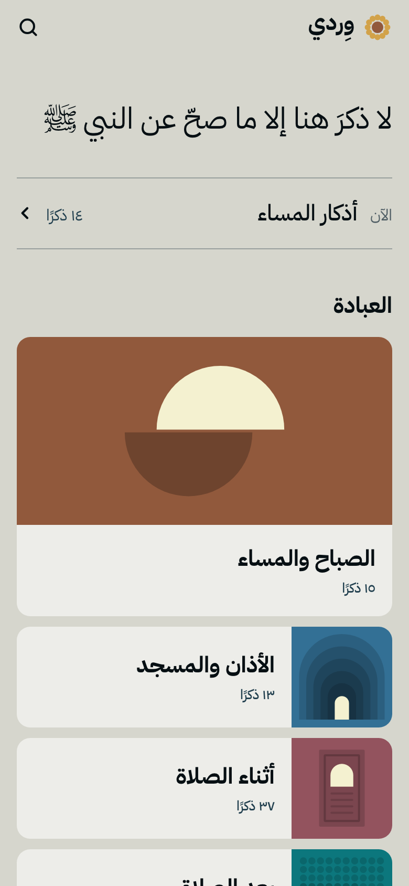
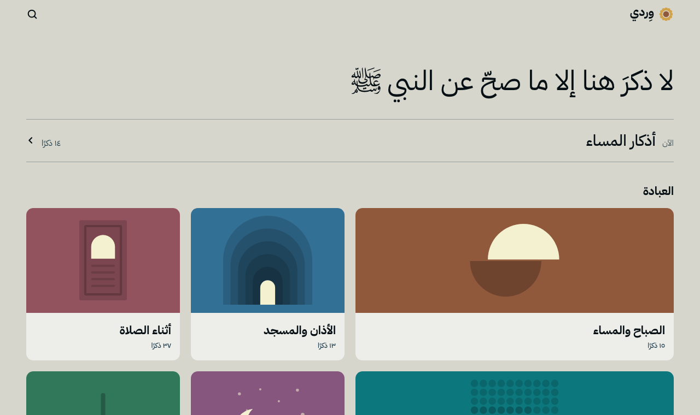
- أنفع سطر للزائر اليومي: ما يحتاجه الآن، بنقرة.
- اختيار واحد بدل ستة عشر (قانون هيك).
-
يحتاج سكربتًا صغيرًا في الصفحة يقرأ الساعة، وهذا غير معتاد في الموقع، فيحتاج موافقتك
ومدخلًا في
docs/exceptions.md. - بلا سكربت يعرض «أذكار الصباح والمساء».
بلا رأس
لا مساحة رأس أصلًا. الجملة بحجم عناوين الفئات ووزنها، والبطاقات تبدأ تحتها مباشرة. الأقسام هي الصفحة.
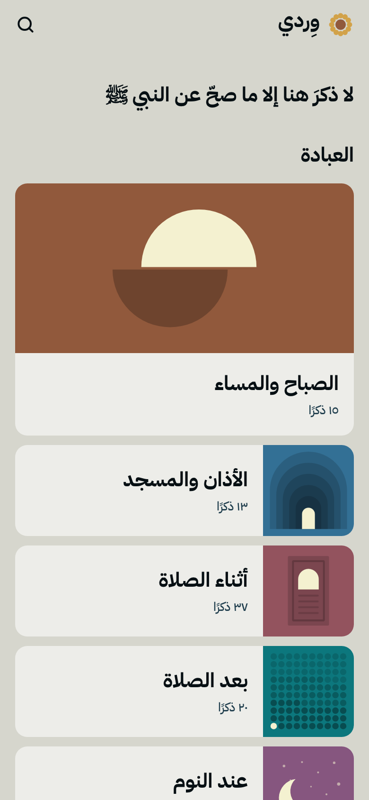
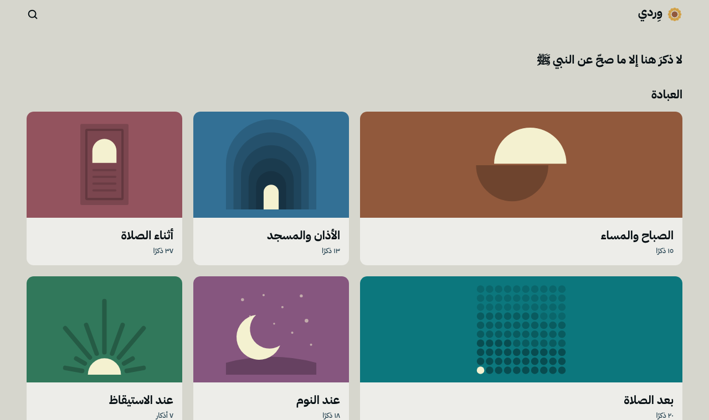
- أسرع طريق إلى الأقسام: أربع بطاقات في الشاشة الأولى على الهاتف.
- أقل ما يمكن، ولا شيء يُشرح.
- الجملة تقلّ هيبتها، فقد يمر عليها الزائر.
- لا شيء يُري الدليل.
الجولة الثانية
جملة واحدة بحبرين
لا عنوان ولا سطر تحته: جملة واحدة متصلة بحجم واحد. الدعوى بالحبر الكامل، وتكملتها (القاعدة) بحبر باهت. تقرأ العين الدعوى وحدها في لمحة، ومن أراد أكمل.


- أبسطها في البناء: عنصر واحد، ولا شيء جديد في التصميم.
- القاعدة كاملة ظاهرة، بلا نقرة.
- أربعة أسطر على الهاتف.
- هادئة، لا تلفت كما يلفت ب٥.
الدعوى ثم فهرس مرقّم
الدعوى كبيرة، وتحتها القاعدة في ثلاثة بنود مرقّمة بينها خطوط شعرية، كما ترقّم Laws of UX قوائمها. على سطح المكتب تصير البنود ثلاثة أعمدة.
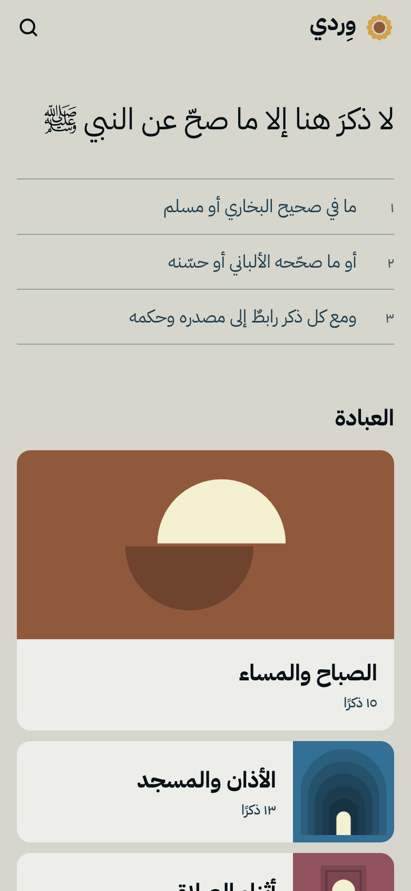

- القاعدة مقسّمة، تُقرأ بنظرة.
- من لغة Laws of UX نفسها (القوائم المرقّمة بالخطوط الشعرية).
- يأخذ أكثر الطول على الهاتف، فتنزل البطاقات.
- ثلاثة بنود لثلاث معلومات صغيرة، فيه شيء من الثِّقل.
الحاشية
على طريقة الكتب العربية: متن وحاشية. على كلمة «صحّ» رقم صغير، وفي الحاشية معناه. على سطح المكتب تقف الحاشية في الطرف الآخر بخط فاصل، وعلى الهاتف تحت الجملة.

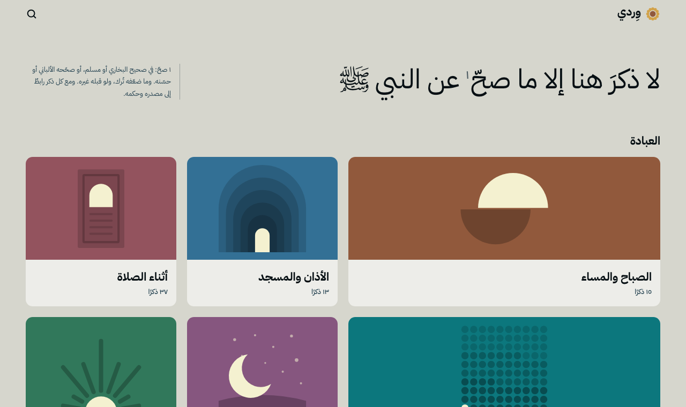
- الشرح معلّق على الكلمة التي يسأل عنها القارئ.
- شكل مألوف لقارئ كتب الحديث، وفيه شخصية.
- تقول الحاشية أيضًا «وما ضعّفه تُرك، ولو قبله غيره».
- على الهاتف تعود قريبة من «عنوان ثم سطر».
- الحاشية صغيرة الخط.
الدعوى وسؤال يُفتح
الدعوى وحدها، وتحتها زر «ما معنى «صحّ» هنا؟». يُفتح فيظهر الجواب. مبني بـ<details>
من HTML، بلا JavaScript.


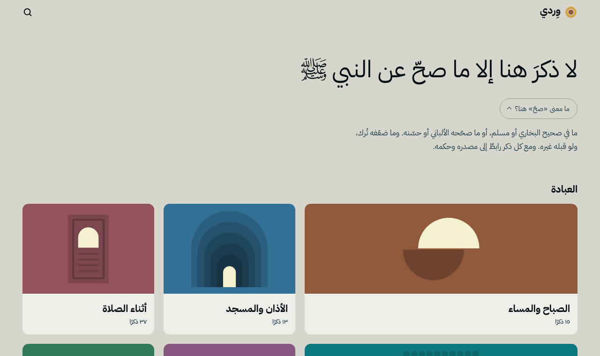
- أنظف شكل في اللمحة الأولى: سطر واحد.
- السؤال بصيغة القارئ، والجواب لمن يريده.
- أكثر الزوار لن يفتحوه، فالقاعدة شبه مخفية.
- زر في رأس الصفحة يزاحم البطاقات على الانتباه.
المسرح الملوّن
الصفحة الرئيسية تأخذ رأس صفحات الأقسام نفسه: لون كامل العرض من خلف الشريط، والجملة بالأبيض البيضي، وفوقها أسماء المصادر الثلاثة مكان عدد الأذكار. وصورة جديدة بقواعد البطاقات: نقاط كثيرة فوق خط، وثلاث مضيئة تحته. كثير يُعرض، وقليل يمرّ.

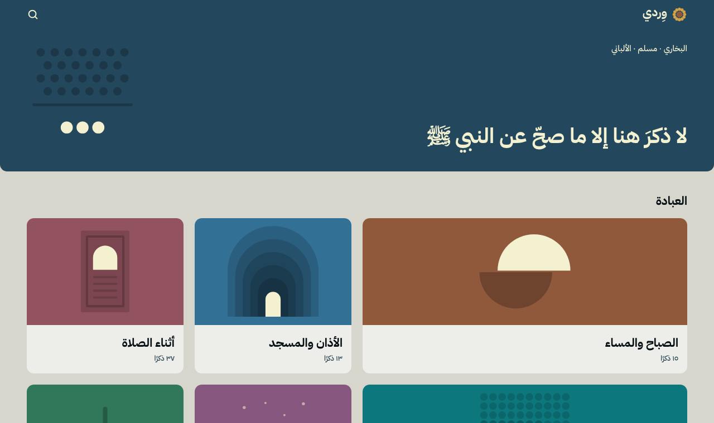
- لا عنوان وسطر: الجملة وحدها، و«البخاري · مسلم · الألباني» في موضع الكلمة الصغيرة فوق العنوان، كما في كل قسم.
- الرئيسية تشبه بقية الموقع، فيعرفها الزائر بعد أي صفحة.
- الصورة تقول الدعوى بلا كلام، بقواعد البطاقات (حبران، شكل مجرد، عنصر مضيء واحد). ويمكن أن تتحرك النقاط الثلاث وحدها، على قاعدة «لا يتحرك إلا المضيء».
- لون جديد (أزرق حبري) وصورة جديدة، وكلاهما يحتاج رضاك قبل البناء.
- القاعدة أسماء فقط، بلا «صحّحه أو حسّنه».
- بطاقات الأقسام تنزل نحو سطرين على الهاتف.
ردّك
اكتب رقم المقترح، وإن شئت اخلط بين اثنين (مثلًا «ب٦ بجملة ب٧»، أي الرقم في الجملة والذكر تحتها):
ت٢
الصفحات الحيّة (ما دام الخادم المحلي يعمل): ب١ · ب٢ · ب٣ · ب٤ · ب٥ · ب٦ · ب٧ · ب٨ · ب٩ · ب١٠ · الجولة الأولى